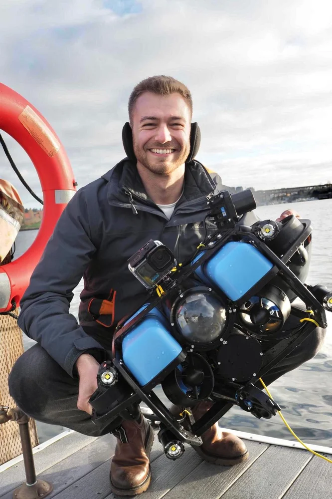
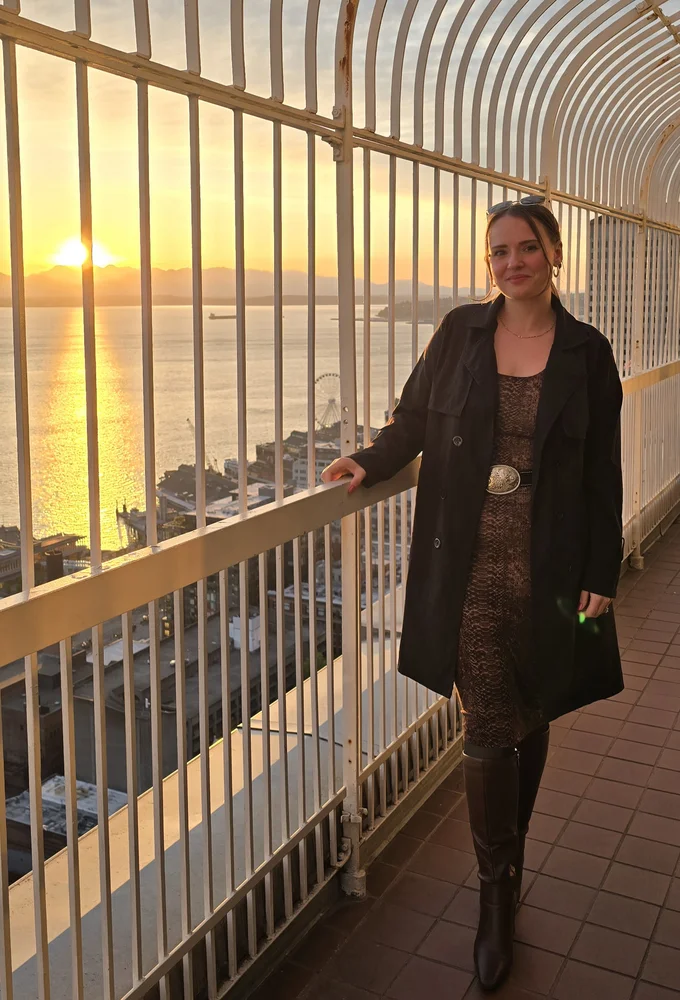
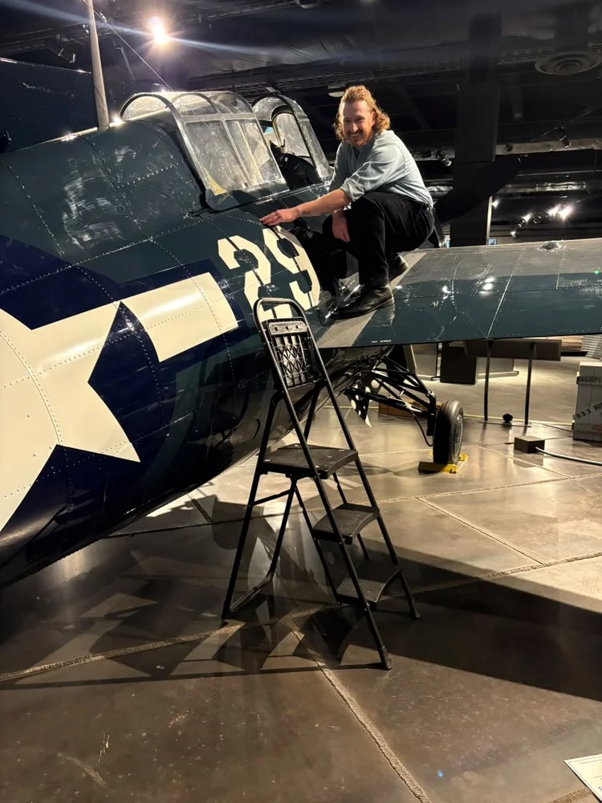
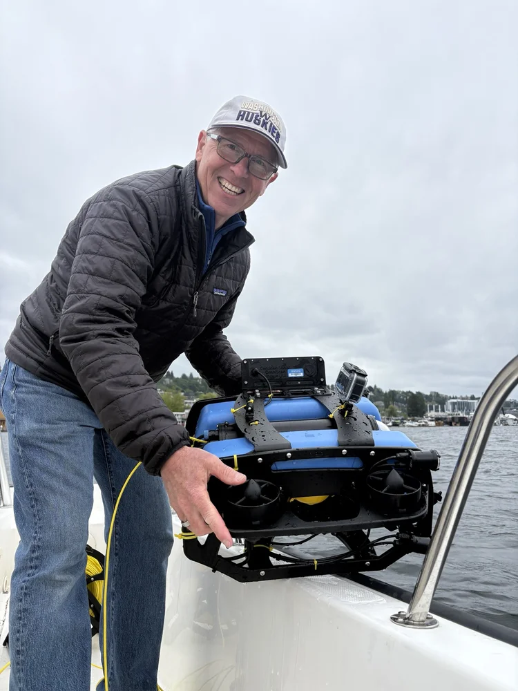

Shipwreck City is built by local community members. Each team member brings a different discipline to the water, including robotics, maritime history, archival work, and seamanship.

Phil is the project lead and unmanned systems pilot. A robotics researcher and Seattle rookie, Phil embraces Lake Union and the surrounding waters through sailing, scuba diving, and paddle boarding. The existence of 'unknown' lakebed targets in his new backyard drove him to start Shipwreck City. Phil holds a Master's Degree in Ocean Engineering from the University of Rhode Island and previously worked for U.S. National Laboratories.
LinkedIn →"Lake Union is one of Seattle's most-visited lakes — and almost nobody knows what's beneath the surface. We're changing that."

Libbie is the associate curator of exhibits and engagement lead at MOHAI. Her background in Maritime Studies and eight years working in museums bring key historical perspectives and community connections, which elevate this project to new levels. Libbie holds a Master's Degree in Museum Studies from the University of Washington.
LinkedIn →"Documenting what is below the surface of Lake Union will help us understand how to be better stewards of urban nature and open doors to scientific and historical research we can all benefit from."

Evan serves as Shipwreck City's Digital Archivist, helping transform underwater discoveries into an accessible public archive. With a background in archaeology, museum studies, and public history, he reviews dive records and historical sources and develops public-facing overviews that make Lake Union's submerged history easier to search, understand, and share.
Evan holds a Master's Degree in Museum Studies from Johns Hopkins University and is passionate about preserving cultural heritage by uncovering the human stories behind artifacts and bringing them to life through research, storytelling, and interpretation.
LinkedIn →"These wrecks are more than just objects on the lakebed. They are evidence of the people and the stories that shaped Lake Union. Our job is to document what remains and make that history accessible for all."

George is an experienced boat captain, fisherman, and ocean conservationist. His interest in marine robotics led to his involvement as a boat captain for ROV deployments around the Puget Sound. He holds a degree in Business from the University of Washington and maintains a USCG OUPV (six-pack) captain's license.
LinkedIn →"Every ROV dive into Lake Union is a mystery. We go down never knowing exactly what we're going to find, and that's the best part."
We're always looking for people who want to help document Lake Union. If one of these roles fits your skills, or you have something else to offer, get in touch.
Shape the visual identity of the project, including maps, infographics, social media graphics, and print materials for events.
Capture the story above the waterline, including field days, boat operations, interviews, and behind-the-scenes footage. Manage audio and visual.
Help us obtain improved footage of the wrecks and underwater operations, working with the ROV team and divers on camera setup, lighting, and shot planning.
Turn hours of raw dive footage into short, shareable pieces for the archive, social media, and presentations.
Support dive operations and close-up documentation where conditions allow. Advanced Open Water certification, DAN insurance, and experience in cold water diving required.
Fly the ROV and aerial drones on field days. Experience with unmanned systems is required.
Plan and execute social media campaigns for Shipwreck City official channels. Promote maritime archaeology and share behind the scenes footage of our adventures.
Interested in volunteering? Share your resume, introduce yourself, and tell us why you're interested in Shipwreck City!